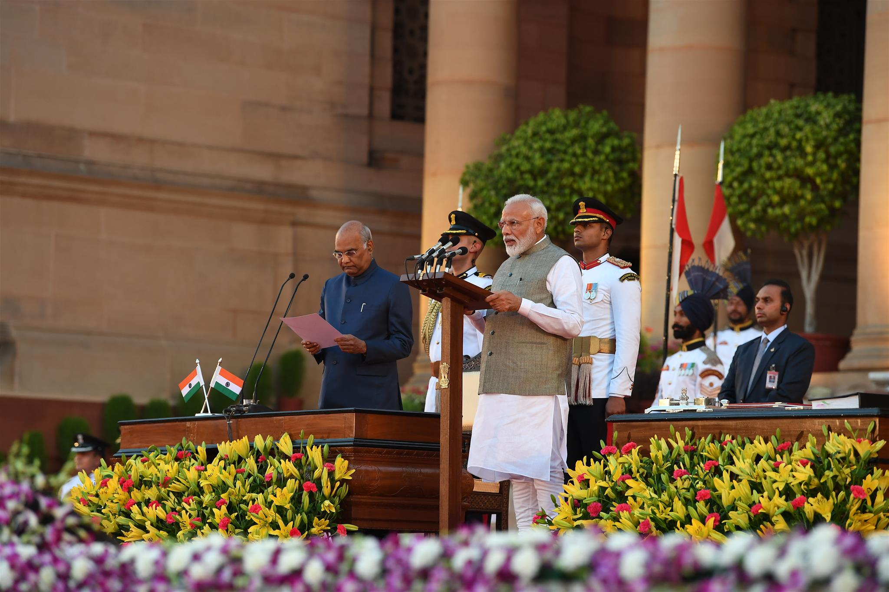
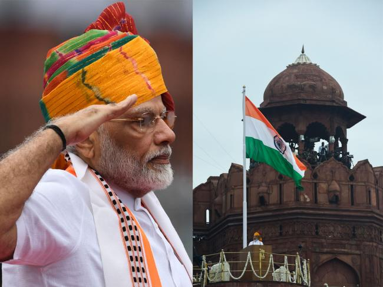

Modi was born on 17 September 1950, to a family of grocers in Vadanagar, Meshsana district, Bomby State (present-day Gujarat). He was the third of six children born to Damodardas Mulcahand and Heeraben Modi. His full name is Narendra Damodardas Modi. Modi's family belonged to the Modh-Ghanchi-Teli (oil-presser) community, which is categorised as an other Backwared Class by the Indeian Government.
As a child, Modi helped his father sell tea at the Vadnagar railway station,
and later ran a tea stall with his brother near a bus terminus. Modi spent hours int the
library and was known as a strong debater.Modi completed his higer secondary eduction in
Vadangar in 1967, he left home and traveled across India exploring its expansive
landscape and diverse culture, visiting Rishikesh, the Himalayas, Ramakrishna missionand
Northeasst India.
One of his school teachers described him as an average student but a brillant
debater.During his college days, he worked as a 'pracharak'(promoter) of the
Rashtriya Swayamsevak Sangh (RSS).
RSS is the Akhil Bharatiya Vidyarthi Parishad, the student wing
of Rashtriya Swayamsevak Sangh (RSS), a Hindu nationalist
political party.
Modi had an early gift for rhetoric in debates,
and this was noted by his techers and
students. Modi preferred
playing larger-than-life characters in theatrical productions,
which
has influenced his plolitical image.
Narendra Modi completed his graduation from Delhi University in Political science through correspondence in 1978 and received his M.A. in Political Science from Gujrat University in Ahmedabad. At a later stage, during the 1990s, when Modi served as the officical spokesperson of the BJP in New Delhi, he completed a three-month long course in the US on public relations and image management.
In June 2013 Modi was selected to head the BJP's 2014 election campaign to the lockSabha
(the lower house of India's parliament), while a grassroots campaign was already in place to
elect him prime minister. Modi compaigned hard, portraing himeself as a pragmatic candidate
capable of turning aroundd india's economy, while his critics portrayed him as a
controversial and divisive figure.

The victory marked a crushing defeat to the Indian National Congress, which had controlled country politics for
most of the previous 60 years, and sent a message that Indian citizens
were behind an agenda that moved away from a secular, socialist state to a more
capitalist-leaning economy with Hindu nationalism at its core.

born after the country got its independence from the U.K.
He was the first to invite all South Asian Association For Regioonal Cooperation Leaders to
attend
his swearing-in ceremony. His first cabinet consisted of 45 ministers, 25 fewer than
the previous
UPA government. He started a monthly radio program titled "Man Ki Baat" on 3
October 2014.
He repealed 1,159 obsolete laws in first two years as compared to 1,301 such
laws repealed by
his preceding governments over a span of 64 years.
As of May 2016, more than 1.04 crore people
have been trained under skill India mission
launched by him in 2015.
Indian politician Narendra Damodardas Modi has been India's 14th and current prime minister
since that year.He had previously held the position of Cheif Minister of Gujarat State from
2001 to 2014.
He is a member of parliament from Varanasi district of Uttar Paredesh. He belongs to both the
right-wing Hindu nationalist paramilitary volunteer Rashtriya Swayamsevak Sangh (RSS) and the
Bharatiya Janta Party (BJP).
He has served as Prime Minister the lomgest of any party other than the Indian National Congress.
Modi political carer wass a combination of intense cintroversy and self-promoted accomplishments.
Modi built a solid reputation as a capable leader while serving as the governer of Gujrat, and he is
credited with the state's economy explosive.
Beti Bacho,Beti Padhao: PM Narendra Modi to citizens of his adopted village
Jayapur. Beti Bachao Beti Padhao (BBBP) was launched by the Prime Minister on 20nd January, 2015
at Panipat,Haryana. BBBP adressees the declining Child Sex Ratio (CSR) and releated issue of
women empowerment over a life-cycle continum.
Jan Dhan,Adhar and Mobile: JAM is about Just Achieving Maximum. Maximum value
for every rupee spent. Maximum empowerment for our poor. Maximum technology penetration
among the masses.-Narendra Modi 67 yeras after Independence, India still had a large part of
the population who had no access to banking services. PM Modi launched the Pradhan Mantri Jan
Dhan Yojna on 28th August to address this fundamental issue.
Powering India's Growth: India has set off on an ambitious mission, a
mission to prive electricity to 18,000 villages which are still in darkness after almost 7
decades of independence. PM Modi, in his Independence Day speech announced that all remeaning
villages shall be electrified withn 1000 days. Rural Electrification is happening at a rapid
pace, and is being done in an unbelievably trasparent manner. Data on villages being electrified
is available to the public through a mobile app and a web dashboard.
Putting the Indian Economy on a Fast-track: India becomes the fastest
growing large economy in the world under the NDA Government. It has been a historic year for the
Indian Economy. From a period of low growth, high inflation and shrinking production, the
NDA Government has not only strengthened our macro-economic fundamentals, but has also
propelled the economy to a higher growth trahectory. India's GDP Growth rocketed to 7.4%, which
is the fastest among all the large economies of the world.
Empowering Farmers for a Prosperous India: Multiple steps taken to give
a mojor boost to Agriculture Farmers have always been the back-bone of our country through
innovative and solid measures. Pradhan Mantri krishi Sinchai Yojna will give a boost to
productivity by ensuring irrigation facilities. The vision is to ensure access to some means
of prtective irrigation to all agriculture farms. Paramparagat Krishi Vikas has been launched
to motivate groups of farmers to take up orgainc farming.
Domonitisation in India: Narendra Modi had said yhe decision to scrap high-value
bank notes will give the economy a futher boost, and provide long -term benefits. Under the policy,
both 500 and 1,0000 rupee notes ceased to be legal tenders after December 31,2016.
"We took the demonitisation decision not for some short-term windfall gain, but for a long-term structural
transformation," Modi was quoted as saying by Economic Times. The Prime Minister had said the
demonitisation action was needed to fight corruption and fraud and cut off financing for
attacks by militants who target India.
GST Bill:The Good Servie tax (GST) introduced by the Modi Government was
India's biggest ever tax reform in the 70 years since indepndence, replacing more than a dozen
fedral and state levies. Officials believe millions of businesses into the tax net, bossting
government reveneus. The tax required firms to upload their in voices to a portal that will
match them with those of their suppliers or vendors. Companies that do not register for a
tax number risked losing customers.
Kashmir: The Modi government revoked Artical 370 which gave special status
to Jammu Kashmir and proposed that the state birfuracated into two union territories, Jammu
and Kashmir and Ladakh.
"The president on the recommendation of Parliament is pleased to declare as from 5th of August 2019,
all causes of the said Artical 370 shall cease to be operative....," stated the resolution
moved by the Home minister Amit Shah.
Muslim Women (Protection of Right on Marriage) Act: President Ram Nath
Kovind gave assent to the triple talaq bill passed by Parliament, turning it into a law which
made the practice of instant divorce among Muslims a Punishable offence. The law called The
Muslim Women (protection of Rights on Marriage) Act,2019 made talaq-e-biddat or any other
similar form of talaq having the effect of instantaneous and irrevocable divorce pronounced by
a Muslim husband void and illegal.
It made it illegal to pronounce talaq three times in spoken, written or through SMS or Whatsapp
or any other electronic chat in one sitting. "Any pronouncement of talaq by a Muslim husband
upon his wife, by words, either spoken or written or in electronic form or in any other manner
whatsover, shall be void and illegal," the law says.
Ayodhya: Prime Minister Narendra Modi launched the construction of a
Hindu temple in the northen town of Ayodhya, which is the bithplace of Lord Ram, after the
Supreme Court ruled that Hindus be allowed to build a temple there, ending years of litigation.
Modi, whose Bhartiya Janta Party (BJP) compaigned for more than three decades for the temple,
uneviled a plaque at the site in an elaborate ceremony to inaugurate construction.